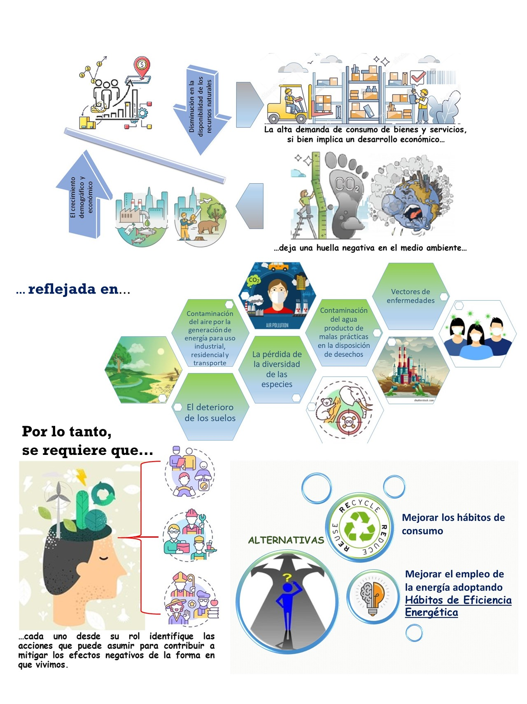
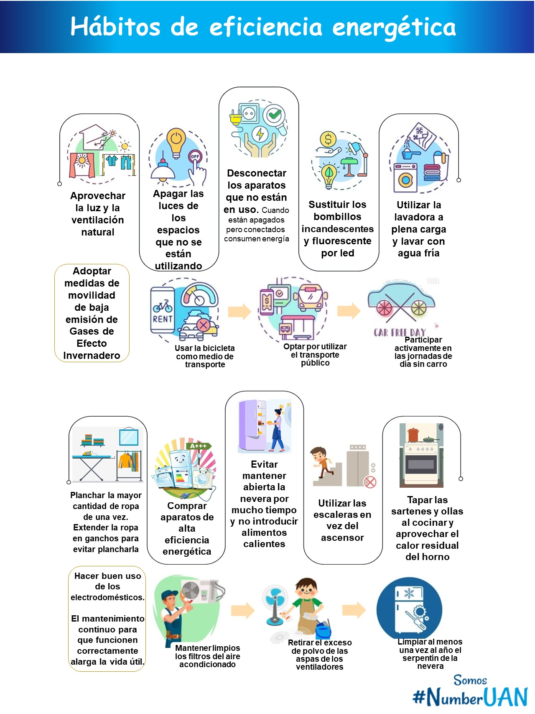

Educación y Conciencia Ambiental
Bienvenido a nuestro sitio dedicado a la educación y conciencia ambiental. Aquí podrás encontrar información y recursos para aprender cómo la tecnología, como la Inteligencia Artificial, y nuestros hábitos diarios pueden influir en el medio ambiente. Nuestro objetivo es fomentar un futuro sostenible a través de la divulgación y la acción comunitaria.
Beneficios de la IA orientada en la educación
El acceso y la disponibilidad de la información son aspectos fundamentales para cerrar brechas a nivel cognitivo. Enfocada en la educación la inteligencia artificial tiene beneficios significativos en los procesos de enseñanza-aprendizaje, como la optimización del tiempo y los resultados en la ejecución de tareas de índole académico, la personalización del aprendizaje, el acceso a la información de forma inmediata y confiable. Sin embargo, presenta desafíos asociados con la originalidad de los productos (plagio) y la dependencia de su uso, limitando en los estudiantes el desarrollo de habilidades comunicativas como la lectura analítica, la redacción de textos, la capacidad de sintetizar, inferir y discernir, estas últimas relacionadas con el desarrollo del pensamiento crítico.
Preocupaciones del uso de la IA para un mejor futuro
El crecimiento de la población y la necesidad de satisfacer la demanda de bienes y servicios, sumado a los avances tecnológicos que han permitido la masificación de productos, están generando una sociedad de consumo y de la inmediatez poco consciente con los impactos ambientales.
Si bien es cierto que existen políticas sólidas, tratados y unos objetivos de desarrollo sostenibles con metas e indicadores bien definidos, no todas las empresas adoptan prácticas de producción sustentables.Ejemplo de ello es la obsolescencia programada, incompatible con la sostenibilidad.
La integración de la Inteligencia Artificial (IA) en diversas industrias promete soluciones innovadoras, pero también genera inquietudes ambientales. A continuación, exploramos algunos aspectos a considerar:
Los procesos de desarrollo y entrenamiento de IA pueden requerir una gran cantidad de energía. Esto podría aumentar la huella de carbono si no se utilizan fuentes de energía renovables. Además, la necesidad de hardware especializado puede acelerar la producción y desecho de equipos electrónicos, lo que plantea desafíos de reciclaje y manejo de residuos.

Cada vez que actualizamos dispositivos para soportar nuevas tecnologías de IA, generamos desechos electrónicos que pueden contaminar el medio ambiente si no son reciclados adecuadamente. Impulsar programas de reciclaje y reutilización es esencial para mitigar este impacto.
Por esta razón, no se debe promover el uso de la IA para generar contenido sin un propósito educativo o social claro. Actividades como crear versiones animadas de personas solo por entretenimiento son poco productivas.
Hábitos Sostenibles para el Futuro
Pequeños cambios diarios pueden marcar una gran diferencia. Desde el uso de energías limpias hasta la reducción del consumo innecesario, cada acción cuenta. Fomentar hábitos sostenibles en la comunidad mejora la calidad de vida y protege el planeta:
El principal reto es masificar el uso de la inteligencia artificial como herramienta para optimizar el aprendizaje estudiantil con un enfoque ético y responsable. Esto implica proponer tareas y actividades que fomenten el trabajo autónomo, fortalezcan la apropiación de los temas, y promuevan un uso reflexivo y crítico de la tecnología.